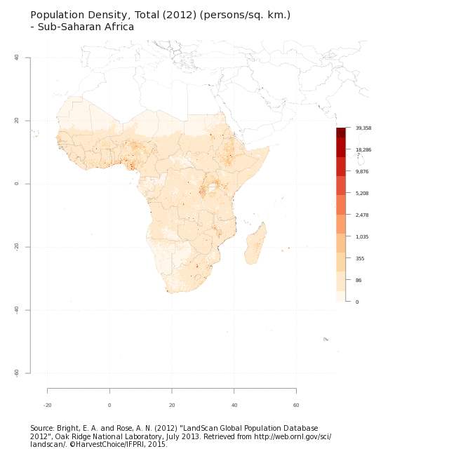
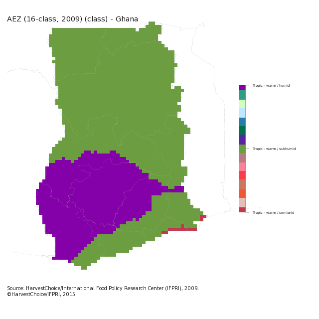
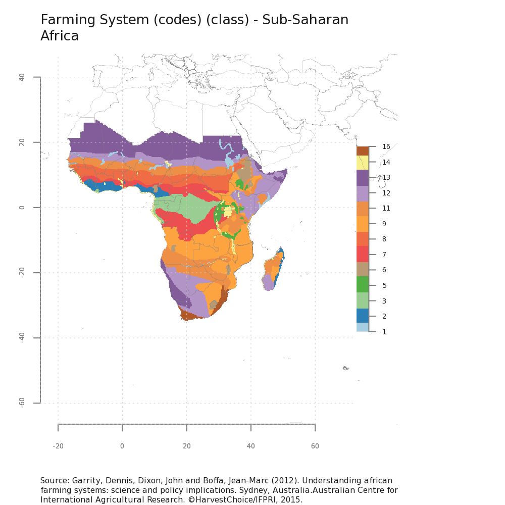
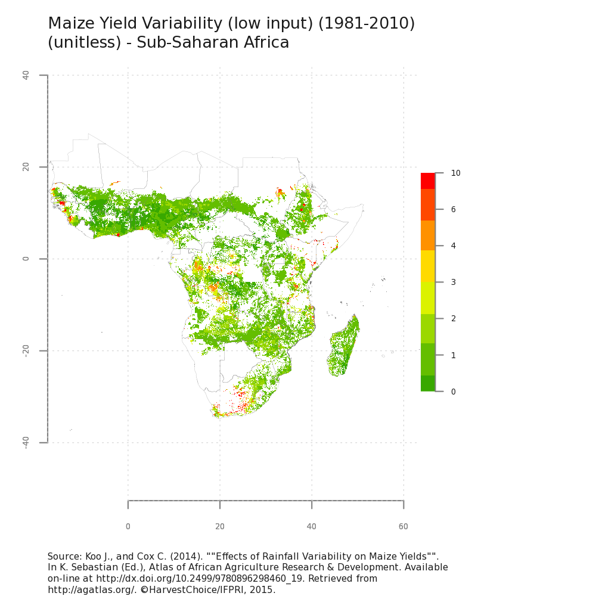
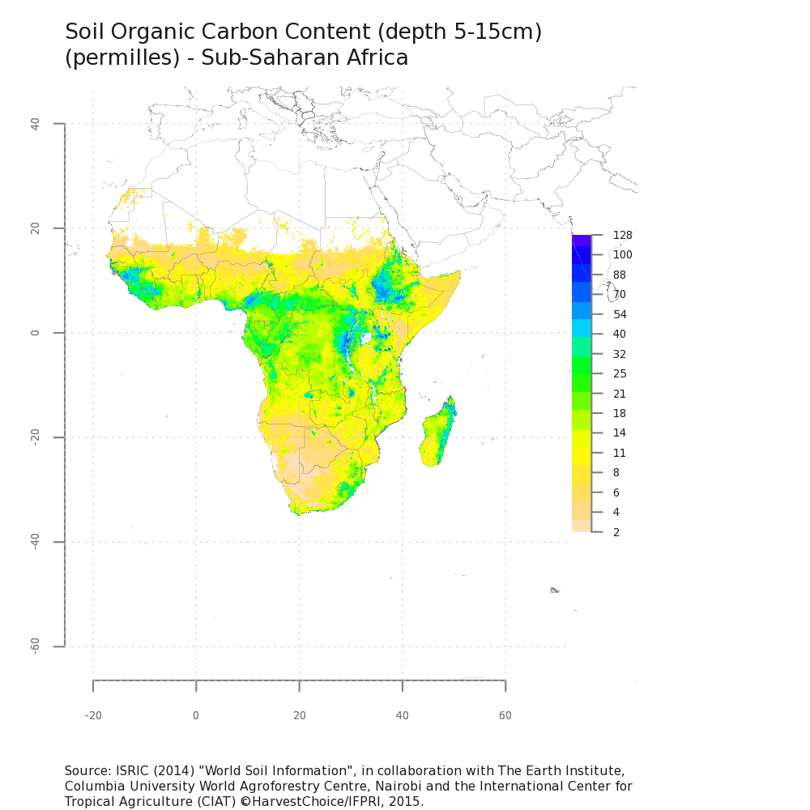

Plot HarvestChoice 5-arc-Minute Spatial Indicators
Usage
genPlot(var, iso3 = "SSA", pal, format = "default", style = "default", width = 640, height = 640, ...)
Arguments
- var
- character array of variable codes to plot
- iso3
- optional ISO3 country or region code to filter by
- pal
- optional Brewer color palette used for plotting, e.g. "Blues"
- format
- one of "default", "print", "thumbnail" to control legend and axes
- style
- one of
classIntervals()style arguments (e.g. "kmeans"), or "default" to use default breaks - width
- plot width in pixel (unless
unitsis specified) - height
- plot height in pixel (unless
unitsis specified) - ...
- any argument passed to
png(), e.g. units, res, pointsize
Value
-
Array of generated file names, one for each plot
Description
Method to plot HarvestChoice rasters with mutiple symbology options.






Examples
# Generate standard raster plot of 2012 population density for sub-Saharan Africa genPlot("PD12_TOT")PD12_TOT : Total Pop. Dens. '12Warning message: grid has empty column/rows in dimension 1 Warning message: grid has empty column/rows in dimension 2[1] "PD12_TOT.png"# Generate 3 raster plots for Ghana with legend and title but not axes genPlot(c("AEZ16_CLAS", "whea_h"), iso3="GHA", format="print")AEZ16_CLAS : AEZ-16whea_h : Wheat area '05[1] "AEZ16_CLAS.GHA.print.png" "whea_h.GHA.print.png"# Generate 3 raster plots for Nigeria with the specified dimensions p <- genPlot(c("FS_2012", "yield_l_cv", "soc_d15"), width=5, height=5, units="in", res=200, pointsize=8)FS_2012 : Farming System CodeWarning message: grid has empty column/rows in dimension 1 Warning message: grid has empty column/rows in dimension 2yield_l_cv : Maize yield CV (low)Warning message: grid has empty column/rows in dimension 1 Warning message: grid has empty column/rows in dimension 2soc_d15 : Soil org. carbon (5-15cm)Warning message: grid has empty column/rows in dimension 1 Warning message: grid has empty column/rows in dimension 2